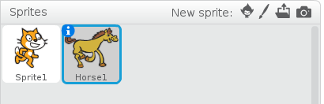

Editing sprites
To make your sprites unique, you can edit them by making changes to their costumes. You can be creative and give your sprites wings (or hats or skateboards). You can edit a sprite in an existing project by duplicating and making changes to its costume.
To edit a sprite
- Open an existing Scratch project with at least one sprite in it.
- From the Sprite list, select the sprite that you want to edit.
- To see the available costumes for the selected sprite, click the Costumes tab in the Blocks palette.
- From the Cursor toolbar, click the Duplicate icon.
- Click on the costume you want to duplicate in the Costume list.
- Choose a colour from the color picker.
- From the Graphics toolbar, click the pencil icon to use the pencil tool.
- Hold down the mouse button and draw wings on the costume in the Costume editing area.
- Click File > Save Now to save your project.
A blue box appears around the selected sprite.
The Costume list appears.
The mouse pointer changes to the Duplicate icon.
A copy of the selected costume appears in the Costume list and the mouse pointer returns to its original shape.
The foreground box changes to the colour that you have chosen.
The pencil icon is highlighted.
Wings appear on your sprite (on the stage) in the colour that you chose from the color picker.
Your project is saved.
Now that you know how to edit a sprite by duplicating and making changes to its costume, you can come up with creative costumes for sprites in all of your Scratch projects. Next, you’ll learn how to change the appearance of your sprite on the stage by creating a script to switch between your sprite’s costumes. See Changing the appearance of sprites to learn how to change the appearance of your sprite.